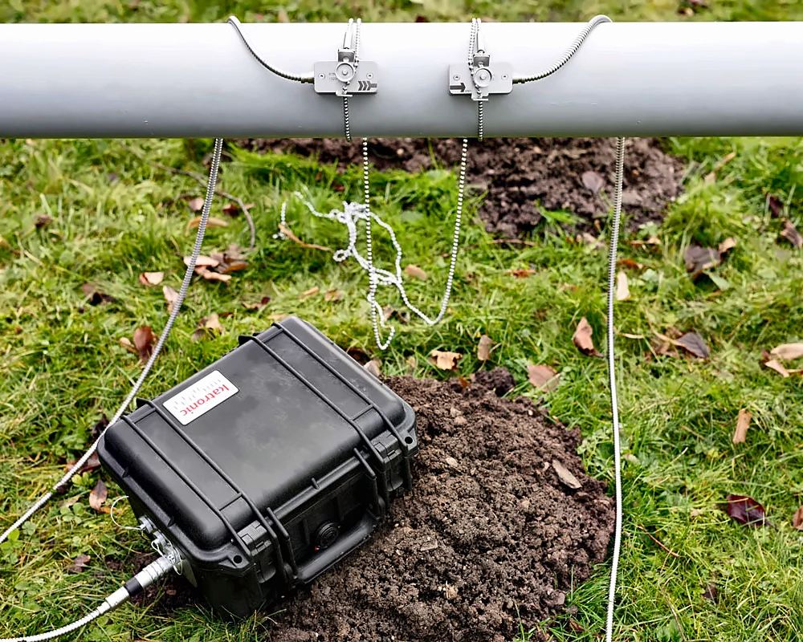

Débitmètres · Conduite en charge
KF210Débitmètre à ultrasons portable en mallette étanche
Le débitmètre à ultrasons pour les campagnes longues, loin de toute alimentation. Mallette étanche IP67, capteurs inox IP68 et batteries intégrées : jusqu’à 21 jours de mesure en continu, 90 jours en mode économie.
- Diamètres
- DN 50 à DN 2500
- Autonomie
- Jusqu’à 21 jours en continu
- Protection
- Mallette IP67 · capteurs IP68
- Options
- Sortie 4-20 mA · contact
Idéal pour
- Campagnes longues
- Sites sans alimentation
- Diagnostic de réseau
- Asservissement de préleveur
- Contrôle de pompe
LeasingDisponible à l’achat ou en leasing, par mensualités. Comment ça marche
Points forts
Un ensemble tout-terrain : fiabilité, robustesse et autonomie.
- Jusqu’à 90 jours1 à 3 batteries LiFePO4 : 7, 14 ou 21 jours en continu, jusqu’à 90 jours en mode économie.
- Mallette étancheBoîtier IP67 pour les zones exposées aux intempéries.
- Capteurs inox IP68Capteurs K1N et câbles inox, immersion à 1,5 m.
- Sortie contactPour asservir un préleveur au débit.
- Sortie 4-20 mAPour transmettre le débit à un automate ou un enregistreur.
- Non intrusifCapteurs posés à l’extérieur de la conduite, sans coupure.
Principe de mesure
Deux capteurs, posés à l’extérieur de la conduite, émettent et reçoivent tour à tour une impulsion ultrasonore. Dans le sens de l’écoulement, l’onde va plus vite ; à contre-courant, plus lentement.
La différence entre les deux temps de parcours est proportionnelle à la vitesse du liquide. Avec le diamètre, l’épaisseur et la matière de la conduite saisis au paramétrage, l’appareil calcule le débit.
- Capteur d’épaisseur de paroi en option
- Fixation par chaîne inox, sangle ou rail aimanté
- Enregistrement livré avec câble USB et logiciel
Applications
Pour les installations de longue durée dans les zones isolées.
- Diagnostic de réseauCampagnes de plusieurs semaines sur réseaux d’eau potable.
- Contrôle de pompeMesure du débit réel sur des stations isolées.
- Vérification de débitmètreMesure comparative sans démontage.
- Prélèvement asserviPilotage d’un préleveur par la sortie contact.
Caractéristiques
Mallette autonome avec capteurs K1N ; options de sorties et d’enregistrement.
| Principe | Ultrasons, différence de temps de transit |
|---|---|
| Vitesse | 0,01 à 25 m/s, résolution 0,25 mm/s |
| Précision vitesse | ± 0,5 % de la mesure |
| Précision volume | ± 1 à 3 % selon l’application ; ± 0,5 % après étalonnage sur site |
| Diamètres | DN 50 à DN 2500 |
| Capteurs | K1N inox, IP68, câble inox de 4 m, − 30 à + 130 °C |
| Liquide | Gaz ou matières < 10 % du volume |
| Boîtier | Mallette en polypropylène copolymère, IP67, environ 6 kg |
|---|---|
| Alimentation | 1 à 3 batteries LiFePO4 12,8 Ah, adaptateur secteur |
| Autonomie | 7, 14 ou 21 jours en continu ; 30, 60 ou 90 jours en mode économie |
| Sortie contact | Option, relais NO |
| Sortie courant | Option, 0/4-20 mA, 16 bits |
| Enregistrement | Environ 30 000 ou 100 000 mesures selon la version |
| Afficheur | LCD graphique 128 × 64, rétroéclairé |
| Température | − 10 à 60 °C |
Téléchargements
Questions fréquentes
Les questions que nous posent le plus souvent les exploitants et les bureaux d’études.
Quelle autonomie prévoir ?
Avec une batterie : 7 jours en continu ou 30 jours en mode économie. Deux et trois batteries doublent et triplent ces durées, jusqu’à 90 jours.
Peut-il piloter un préleveur ?
Oui, avec l’option sortie contact, pour un prélèvement asservi au débit.
Quelle différence avec le KF200 ?
Le KF210 est conçu pour durer sur le terrain : mallette étanche, capteurs IP68, batteries de grande capacité et sorties en option. Le KF200 est plus léger, pour les mesures de quelques heures.
Peut-on le laisser à l’extérieur ?
Oui : la mallette est étanche IP67 et les capteurs IP68, pour une installation à long terme dans des zones exposées.